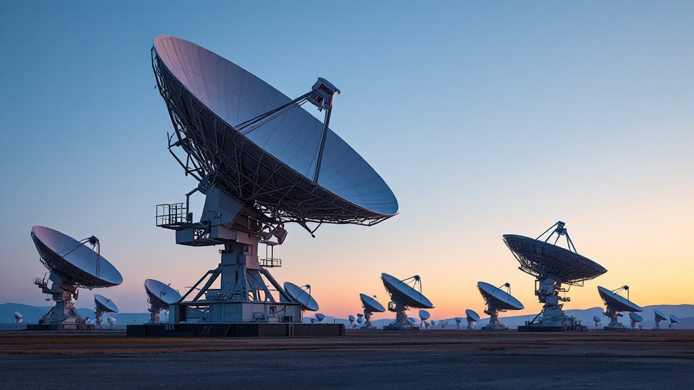

Space News
Aggregated from official and media sources worldwide.
Filter by source


Making the case for optical
SpaceNews


Lake Pelku
NASA


 Illustrative image
Illustrative image

Illustrative image


ESA Awards OHB €102M Contract for ClearSpace-1 Debris Removal Mission
European Spaceflight


 Illustrative image
Illustrative image

Voyager 1 Reaches New Milestone: One Light-Day from Earth
SpacePolicyOnline.com


NASA and FCC Nominations Advance Out of Committee Despite Democratic Boycott
SpacePolicyOnline.com